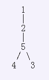
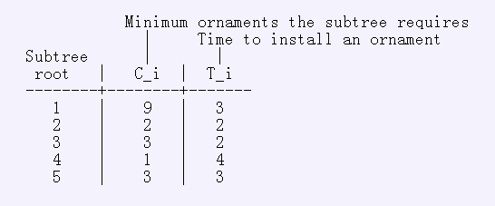
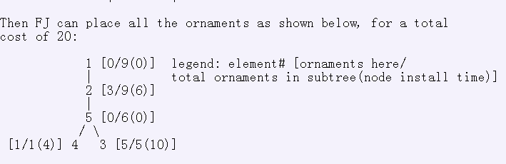
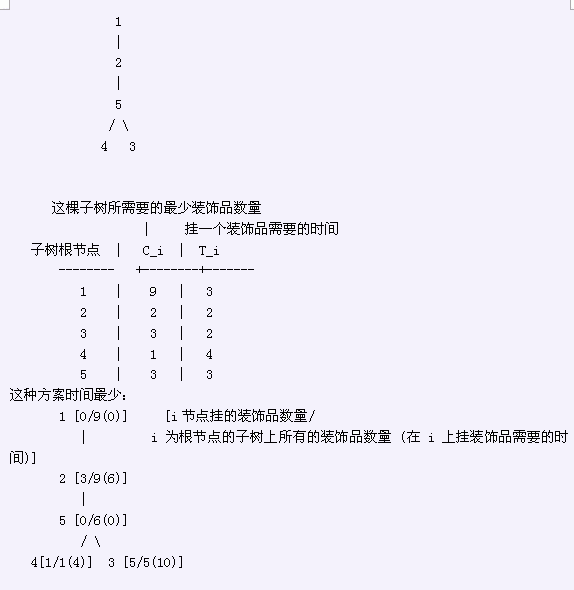

* Line 1: A single integer: N * Lines 2..N+1: Line i+1 contains three space-separated integers: P_i, C_i, and
T_i
第一行：N -----代表N个节点 接下来N行 每行三个数P_i -----i的父亲节点 C_i ----以i为根节点的子树需要至少C_i个装饰品 T_i ----在i这个节点挂一个装饰品需要T_i的时间
Farmer John is decorating his Spring Equinox Tree (like a Christmas tree but popular about three months later). It can be modeled as a rooted mathematical tree with N (1 <= N <= 100,000) elements, labeled 1...N, with element 1 as the root of the tree. Each tree element e > 1 has a parent, P_e (1 <= P_e <= N). Element 1 has no parent (denoted '-1' in the input), of course, because it is the root of the tree. Each element i has a corresponding subtree (potentially of size 1) rooted there. FJ would like to make sure that the subtree corresponding to element i has a total of at least C_i (0 <= C_i <= 10,000,000) ornaments scattered among its members. He would also like to minimize the total amount of time it takes him to place all the ornaments (it takes time K*T_i to place K ornaments at element i (1 <= T_i <= 100)). Help FJ determine the minimum amount of time it takes to place ornaments that satisfy the constraints. Note that this answer might not fit into a 32-bit integer, but it will fit into a signed 64-bit integer. For example, consider the tree below where nodes located higher on the display are parents of connected lower nodes (1 is the root):

Suppose that FJ has the following subtree constraints:

Then FJ can place all the ornaments as shown below, for a total cost of 20:

FJ要装饰一棵Spring Equinox树（N个节点，标号为1--N，1为根节点）。

* Line 1: A single integer: N * Lines 2..N+1: Line i+1 contains three space-separated integers: P_i, C_i, and
T_i
第一行：N -----代表N个节点 接下来N行 每行三个数P_i -----i的父亲节点 C_i ----以i为根节点的子树需要至少C_i个装饰品 T_i ----在i这个节点挂一个装饰品需要T_i的时间
* Line 1: A single integer: The minimum time to place all the ornaments
挂上所有装饰品所需要的总时间
5
-1 9 3
1 2 2
5 3 2
5 1 4
2 3 3
20